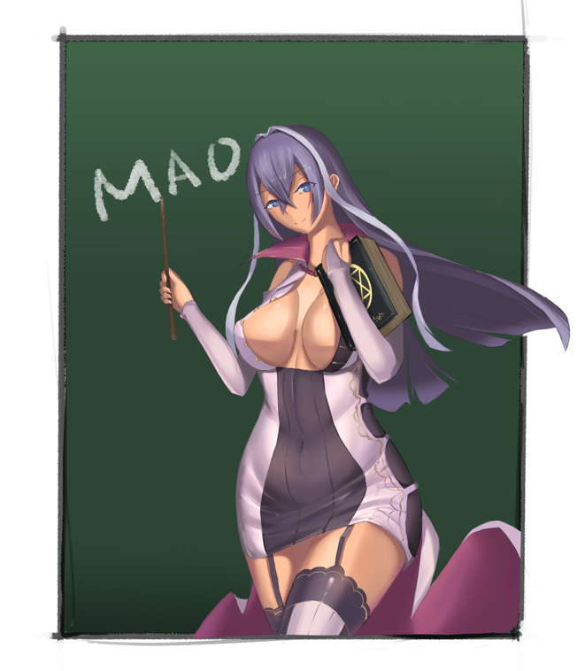

<div id="article_content" class="text-paragraph article_container"><div>伊莎貝爾的體型實在有點誇張(讚美意味</div><div>本來構想就只是塗鴉</div><div>結果也是花了2~3天</div><div><br></div><div>就看圖吧</div><div><br></div>(Imgur好像有點問題<div>這邊先用壓縮過的圖上傳)</div><div><br></div><div><br></div><div>有試著用比較乾的筆畫細節(只有點和線</div><div>效果真的跟大手有很大的距離</div><div><br></div><div>最近幾張圖的用色比較大膽了(應該</div><div>應該也算是我第一次比較黑的肉</div><div>hshs</div><div><br></div><div>比較好的畫質還請至P站<font style="background-color:#000000;">大口吸</font></div><div><font color="#000000">以上!</font></div><div><font color="#000000"><br></font></div><div><font color="#000000"><br></font></div><div>P站<font style="background-color:#000000;">大口吸</font><font color="#000000">給讚:<a href="https://www.pixiv.net/member_illust.php?mode=medium&illust_id=65050143" target="_blank">連結</a></font></div><div>粉專會放一些日常圖(俗稱劣作:<a href="https://www.facebook.com/Bushyeyebrowscat/" target="_blank">連結</a></div><script>
$('article.c-text img').load(function () {
// 表格內圖片大於表格寬時，設為 100%
if ($(this).parents('table').length != 0) {
if ($(this).width() >= $(this).parents('td').width()) {
$(this).width('100%');
} else {
$(this).width($(this).width() + 'px');
}
}
});
</script></div>